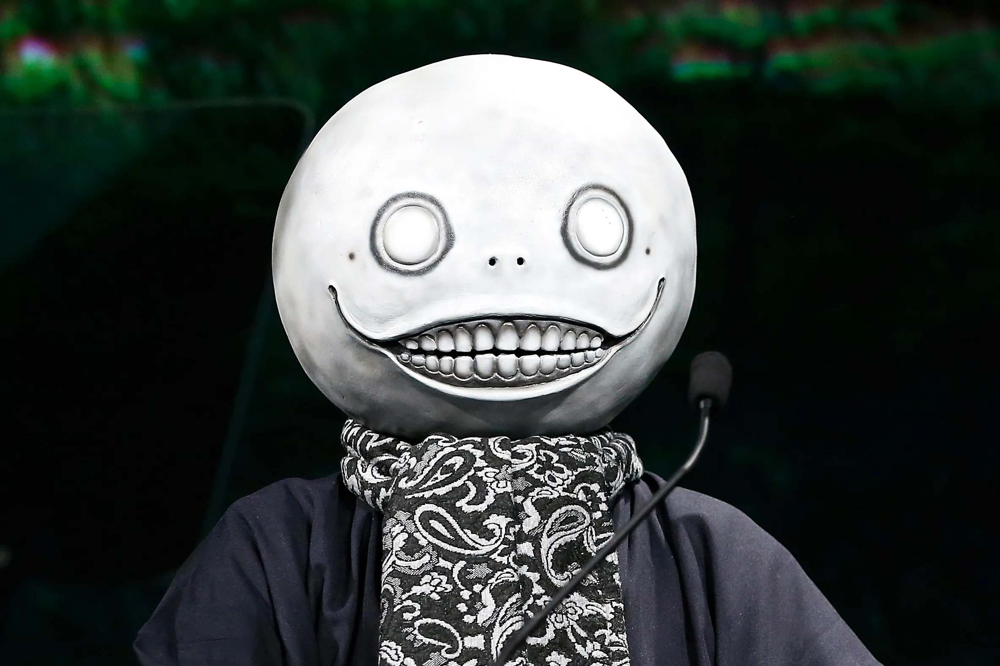
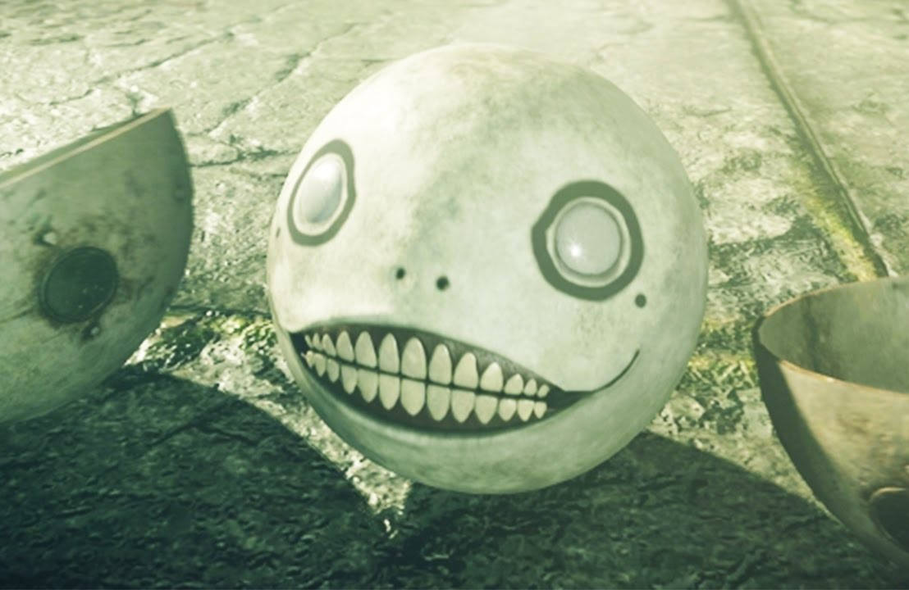
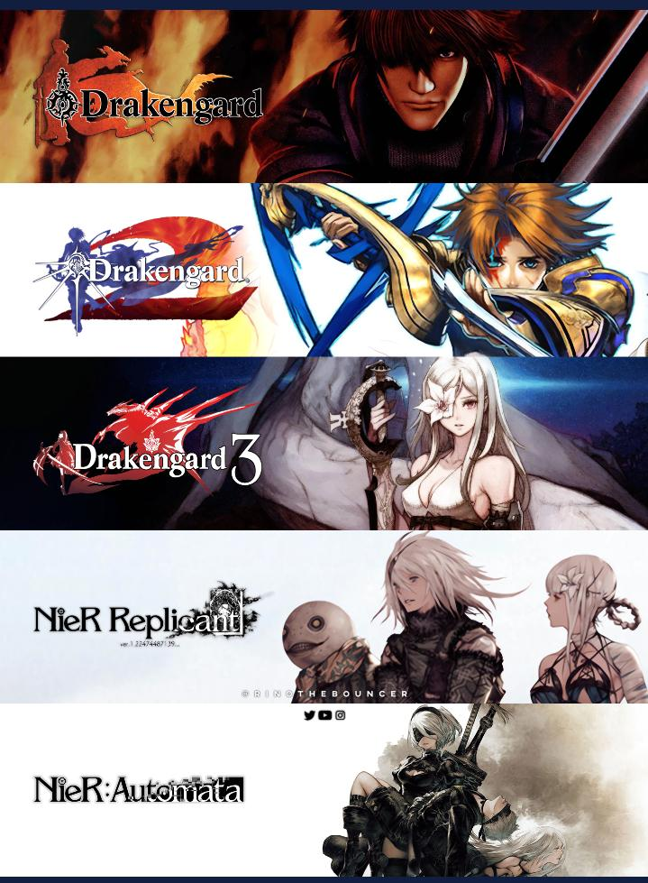
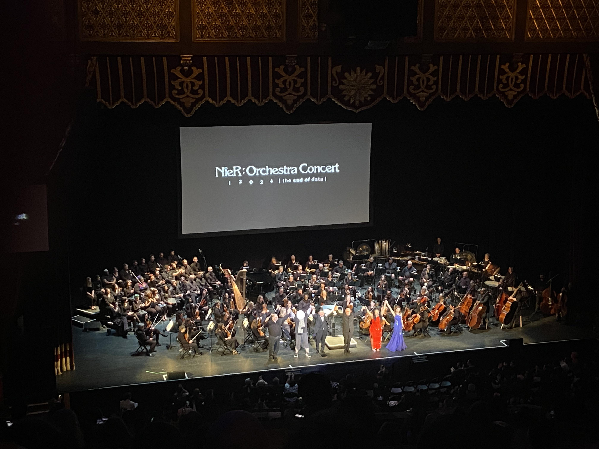
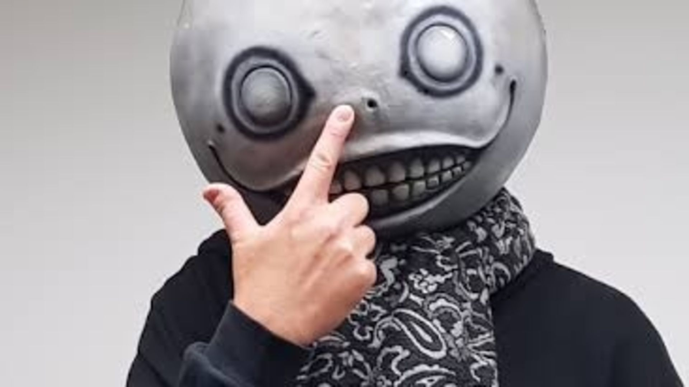

Yoko Taro / BIOGRAPHIE
Le parcours de Yoko Taro.

Né en 1970 dans la préfecture d'Aichi, Yoko Taro étudie le design avant de travailler chez Namco et Sony Computer Entertainment. Il rejoint ensuite le studio Cavia, où il réalise Drakengard, puis NieR Gestalt/Replicant. Après son départ du studio, il fonde Bukkoro et poursuit son parcours avec NieR: Automata, qui fait découvrir son travail à un public plus large.
Derrière ses récits imprévisibles et souvent mélancoliques, Yoko Taro cultive aussi le mystère : il apparaît souvent masqué par le visage d’Émile, personnage de NieR, et préfère laisser ses œuvres parler pour lui.
Un auteur de jeux vidéo à part, entre réflexion et transgression.
Digitally Downloaded, portrait de Yoko Taro
Les histoires de Yoko Taro s'intéressent souvent à des personnages qui vivent dans l'ignorance de leur propre passé ou de la véritable nature du monde qui les entoure. Au fil du récit, leurs croyances sont mises à l'épreuve. Le joueur est parfois amené à reconsidérer des événements déjà vécus et à comprendre que plusieurs points de vue peuvent coexister.
Cette façon de raconter passe aussi par le gameplay. Les jeux de Yoko Taro changent parfois de perspective, de rythme ou de genre au cours de l'aventure. Les combats, les dialogues et les choix du joueur contribuent à construire le récit. Les fins multiples sont une autre de ses marques de fabrique : elles donnent souvent un éclairage nouveau sur les personnages et leurs décisions.
Ses univers peuvent être sombres, mais ils ne sont pas dépourvus d'humour. Des dialogues absurdes, des situations inattendues et des personnages excentriques viennent parfois rompre la gravité de l'histoire. Ce mélange de tragédie et de légèreté rend ses mondes difficiles à ranger dans une seule catégorie.

Le masque porté par Yoko Taro rappelle Emil, un personnage de NieR. Sa forme ronde et son large sourire sont devenus immédiatement reconnaissables pour les fans. Le masque entretient le mystère autour du créateur et donne une continuité visuelle à ses apparitions publiques.

Dans plusieurs de ses jeux, terminer l'aventure une première fois ne suffit pas à en connaître toute l'histoire. Les routes supplémentaires et les fins alternatives permettent d'observer les mêmes événements sous un autre angle. Recommencer n'est donc pas seulement un défi : cela fait partie de la manière dont le récit est construit.

La musique de Keiichi Okabe est l'un des éléments les plus reconnaissables de la série NieR. Les chœurs, les mélodies et les langues imaginaires donnent une identité particulière aux lieux et aux personnages. Les morceaux reviennent parfois sous différentes formes au fil de l'aventure, accompagnant les changements du récit.

Les jeux de Yoko Taro peuvent changer brusquement de ton ou de style. Une scène comique peut être suivie d'un passage tragique ; un combat peut laisser place à une séquence entièrement différente. Ces changements sont souvent conçus pour déstabiliser les attentes du joueur et lui rappeler qu'il participe lui aussi à l'expérience.